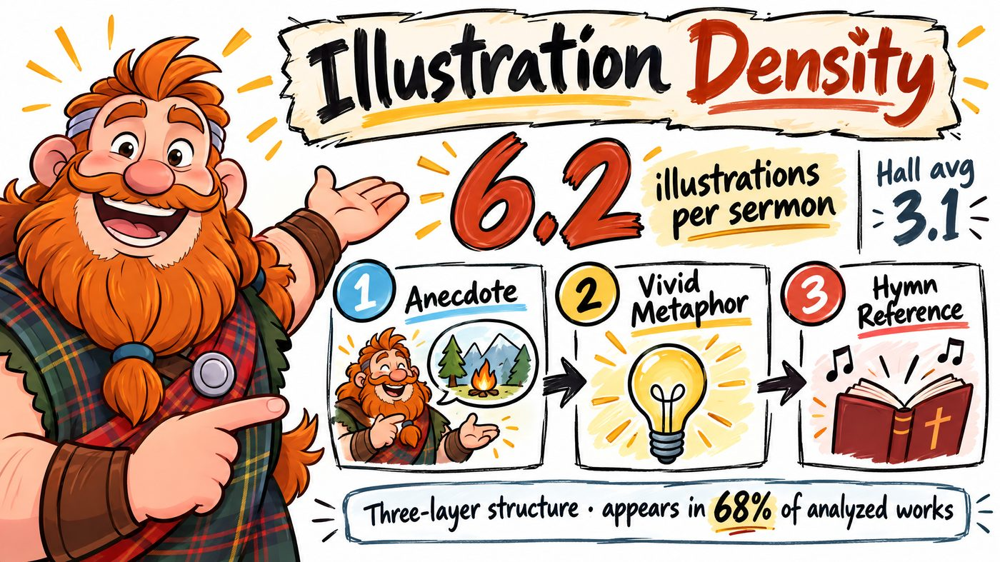
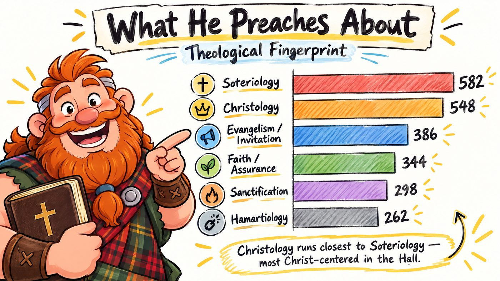
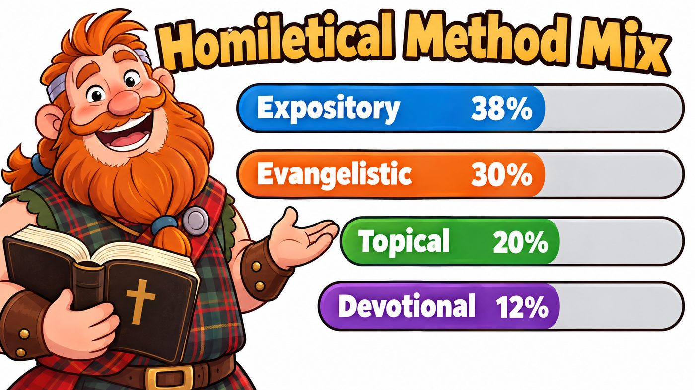
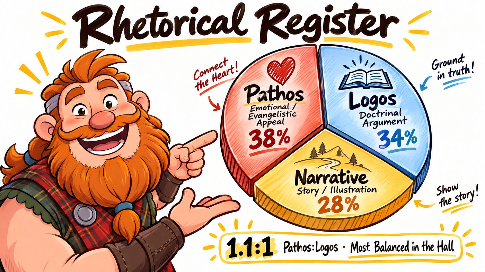
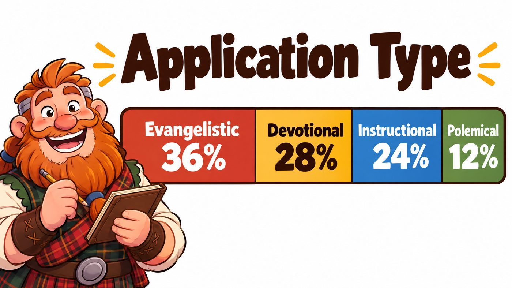
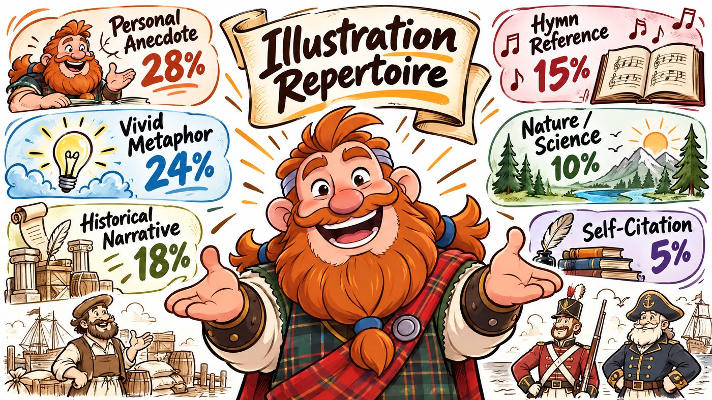

Hall Distinction
6.2 illustrations per sermon — Hall avg 3.1
Anecdote → vivid metaphor → hymn. That three-layer move appears in 68% of analyzed works — the most distinctive fingerprint in the Hall.

Pastor, Metropolitan Tabernacle, London · The Prince of Preachers · 1834–1892
Spurgeon commands the widest rhetorical range of any preacher analyzed: soaring narrative, blunt polemic, tender pastoral appeal, and wry humor — often within a single sermon. His illustration density exceeds every other Hall member.
Anecdote → vivid metaphor → hymn. That three-layer move appears in 68% of analyzed works — the most distinctive fingerprint in the Hall.

Soteriology 582 · Christology 548 · Evangelism 386 · Faith 344 · Sanctification 298… He does not preach topics; he preaches Christ, then shows how the topic connects.

Guild Builds map your preaching the same way — loci, register, illustrations, lineage.
Get a Guild BuildExpository 38 · Evangelistic 30 · Topical 20 · Devotional 12. Eclectic on the outside; evangelistic frame on the inside.

Pathos 38 · Logos 34 · Narrative 28. Feeling and doctrine in near lockstep — then story to carry both.

Evangelistic 36 · Devotional 28 · Instructional 24 · Polemical 12. Every method eventually confronts the listener with Christ.

Anecdote 28 · Metaphor 24 · Historical 18 · Hymn 15 · Nature 10 · Self-cite 5. Merchants, soldiers, laborers, sea captains — Victorian London walking into the Tabernacle.

Watson 28× · Owen 24× · Baxter 20× · Augustine 16×. Library over 12,000 volumes — Puritans lead from the pulpit.
Same honest analysis — your corpus, your fingerprint, your coaching path.
Get a Guild Build →